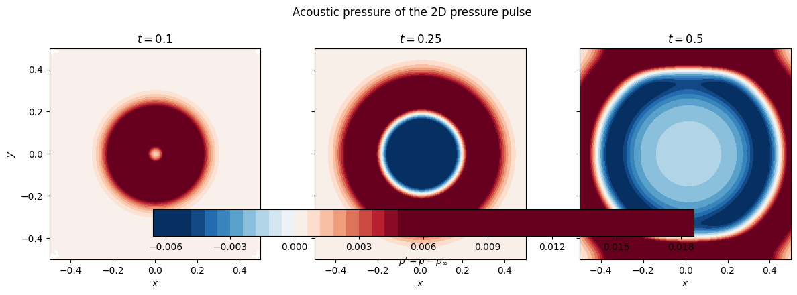

2D Pressure Pulse
This example simulates a radially symmetric Gaussian pressure perturbation expanding outward in a square domain \(\Omega = [-0.5, 0.5]^2\). The setup uses acoustic scaling with a low Mach number background flow and inviscid compressible flow equations.
The initial pulse has the form
where \(r = \sqrt{x^2+y^2}\), \(\Gamma = 0.1\) is the pulse strength, and \(R_v = 0.1\) is the pulse half-width. Top and bottom boundaries are periodic; left and right use non-reflecting FarField conditions.
[37]:
import numpy as np
import ngsolve as ngs
import matplotlib.pyplot as plt
from netgen.occ import OCCGeometry, WorkPlane
from netgen.meshing import IdentificationType
from dream.compressible_flow import CompressibleFlowSolver, FarField, Initial, flowfields
ngs.SetNumThreads(12)
ngs.ngsglobals.msg_level = 0
Domain and Mesh
A unit square is meshed with unstructured triangles. Top and bottom edges are identified periodically so the domain behaves as an infinite channel in the \(y\)-direction.
[38]:
maxh = 0.05
face = WorkPlane().RectangleC(1, 1).Face()
face.name = 'domain'
for bc, edge in zip(['bottom', 'right', 'top', 'left'], face.edges):
edge.name = bc
face.edges[0].Identify(face.edges[2], 'periodic', IdentificationType.PERIODIC)
mesh = ngs.Mesh(OCCGeometry(face, dim=2).GenerateMesh(maxh=maxh))
Solver Configuration
Acoustic scaling is used: \(\rho_\infty = 1\), \(c_\infty = 1\), \(p_\infty = 1/\gamma\), \(|\mathbf{u}_\infty| = M_\infty = 0.03\). The flow is inviscid and the spatial discretisation uses a 4th-order HDG scheme with BDF2 time integration.
[39]:
cfg = CompressibleFlowSolver(mesh)
[40]:
cfg.dynamic_viscosity = 'inviscid'
cfg.equation_of_state = 'ideal'
cfg.equation_of_state.heat_capacity_ratio = 1.4
cfg.scaling = 'acoustic'
cfg.mach_number = 0.03
cfg.riemann_solver = 'lax_friedrich'
[41]:
cfg.fem = 'conservative_hdg'
cfg.fem.order = 4
cfg.fem.viscous_treatment = None
cfg.fem.bonus_int_order = 4
cfg.fem.solver = 'direct'
cfg.fem.solver.method = 'newton'
cfg.fem.solver.method.damping_factor = 1
cfg.fem.solver.method.max_iterations = 10
cfg.fem.solver.method.convergence_criterion = 1e-10
cfg.io.log.to_terminal = False
Initial and Boundary Conditions
The initial state is a Gaussian perturbation in both pressure and density centred at the origin, with a uniform background velocity \(\mathbf{u}_\infty = M_\infty\,\hat{x}\). The pulse is isentropic (\(p \propto \rho^\gamma\)) to first order.
[42]:
Uinf = cfg.get_farfield_fields((1, 0))
Gamma = 0.1
Rv = 0.1
r = ngs.sqrt(ngs.x**2 + ngs.y**2)
gauss = ngs.exp(-r**2 / Rv**2)
U0 = flowfields(rho=Uinf.rho * (1 + Gamma * gauss),
u=Uinf.u,
p=Uinf.p * (1 + Gamma * gauss))
cfg.dcs['domain'] = Initial(fields=U0)
cfg.bcs['left|right'] = FarField(fields=Uinf)
cfg.bcs['top|bottom'] = 'periodic'
Time Integration
[47]:
cfg.time = 'transient'
cfg.time.timer.interval = (0.0, 0.5)
cfg.time.timer.step = 0.01
cfg.fem.scheme = 'bdf2'
Simulation
The acoustic pressure \(p' = p - p_\infty\) is sampled at three snapshot times \(t = 0.1,\,0.25,\,0.5\) on a regular grid for plotting.
[44]:
cfg.initialize()
[45]:
snapshot_times = {0.1: None, 0.25: None, 0.5: None}
Uh = cfg.get_solution_fields()
p_prime = Uh.p - Uinf.p
# Evaluation grid
nx, ny = 80, 80
xi = np.linspace(-0.5, 0.5, nx)
yi = np.linspace(-0.5, 0.5, ny)
def sample_field(cf):
return np.array([[float(cf(mesh(float(x), float(y)))) for x in xi] for y in yi])
with ngs.TaskManager():
for t in cfg.time.start_solution_routine():
t_round = round(t, 10)
for t_snap in list(snapshot_times):
if snapshot_times[t_snap] is None and abs(t_round - t_snap) < 0.5 * cfg.time.timer.step.Get():
snapshot_times[t_snap] = sample_field(p_prime)
print('Done.')
Done.
Results
The acoustic pressure \(p' = p - p_\infty\) at three time snapshots shows the radial expansion of the pulse. The pulse propagates outward at the acoustic speed \(c_\infty + u_\infty \approx 1.03\) and exits through the left/right FarField boundaries without spurious reflections.
[ ]:
XX, YY = np.meshgrid(xi, yi)
vmax = 0.005
fig, axes = plt.subplots(1, 3, figsize=(13, 4), sharey=True)
for ax, (t_snap, vals) in zip(axes, sorted(snapshot_times.items())):
im = ax.contourf(XX, YY, vals, levels=40, cmap='RdBu_r', vmin=-vmax, vmax=vmax)
ax.set_title(f'$t = {t_snap}$')
ax.set_xlabel('$x$')
ax.set_aspect('equal')
axes[0].set_ylabel('$y$')
fig.colorbar(im, ax=axes, label=r"$p' = p - p_\infty$", shrink=2, location='bottom', orientation='horizontal')
fig.suptitle('Acoustic pressure of the 2D pressure pulse')
plt.tight_layout()
plt.show()
/var/folders/f6/jfwzf06j0q9g2b42l14slztc0000gq/T/ipykernel_86967/2809322872.py:13: UserWarning: This figure includes Axes that are not compatible with tight_layout, so results might be incorrect.
plt.tight_layout()
